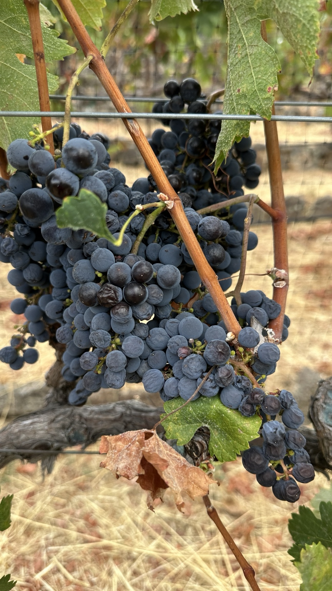

محصولاتی شکلگرفته از خاطره، سرزمین و دستان پرمهر.
الهامگرفته از استالف، پختهشده در مسیر فرانسه و ساختهشده در کالیفرنیا از انگورهایی که با دقت انتخاب و با دست برداشت میشوند.
از شناکی تا کالیفرنیا.
شرابسازی شناکی نام خود را از شناکی گرفته است؛ روستایی که من در آن به دنیا آمدم، در ولسوالی استالف در شمال کابل. مسیر زندگی من سپس از فرانسه گذشت و سرانجام به کالیفرنیا رسید؛ جایی که در سال ۲۰۰۹ شرابسازی را آغاز کردم.
هر محصول شناکی با انگورهای دستچین آغاز میشود. هر سال در مقدار محدود و با توجه ویژه به تعادل، شخصیت و بیان طبیعی میوه تولید میگردد.
Un vin qui pleure est un bon vin.


مراقبتی که پیش از برداشت آغاز میشود.
هر سالِ Chardonnay ما از تاکستانی در آلامو، کالیفرنیا آغاز میشود؛ جایی که شخصاً از تاکها مراقبت میکنم و انگورها را با دست برداشت میکنم.
تمام انگورهای مورد استفادهٔ Shenaky Winery با دست برداشت میشوند. دیگر محصولات با توجه به کیفیت و شخصیت هر سال، از انگورهای برگزیدهٔ کالیفرنیا تهیه میشوند.
فهرست شرابهای موجود در اینجا منتشر خواهد شد.
شرابهای ما با توجه به سال برداشت و زمان عرضه تغییر میکنند. پس از تأیید موجودی، فهرست کنونی منتشر خواهد شد.
چند نمونه از جوایزی که در سالهای گذشته دریافت شدهاند.
عکسها و گواهینامههای نمایشدادهشده فقط نمونه هستند و نمایانگر همهٔ جوایز یا شرابهای موجود نیستند.
با ما در تماس باشید.
برای اطلاعات و خبرهای انتشار محصولات آینده، با info@shenakywinery.com تماس بگیرید.